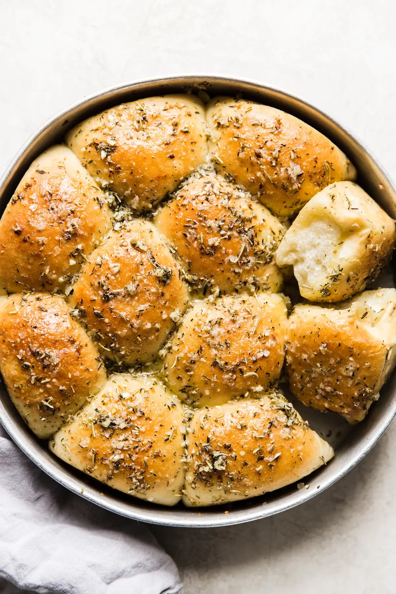

Herb & Garlic rolls that will have your mouth watering.

These rolls are delicious but don't fill up!
this herby garlic dinner roll recipe
is a total snap thanks to a shortcut secret ingredient:
a bag of frozen Rhodes rolls.Frozen Rhodes rolls are good all on their own—just rise and bake.
But, if you can take ten more minutes
to spruce them up a little, you can take these simple dinner rolls from totally yummy to absolutely legendary.
Ingredients
- Rhodes rolls
- Salted butter
- Crushed dried rosemary
- Dried oregano
- Dried thyme
- Fresh garlic
Step by step instructions
- Prep the melted butter, garlic and herb mixture.
- Roll the frozen Rhodes rolls in the melted herb butter.
- Lay them in greased pans, leaving two inches of space between the rolls.
- Let them rise! Let them double in size! This takes about 4-5 hours.
- Bake! For just about 15 minutes, so you can almost pop them into the oven when the rest of the dinner is cooked and you’re pouring drinks and gathering everyone at the table. That way they'll be piping hot when you serve them.
- Serve! Finish the rolls with a brush of butter and a sprinkle of salt.
We are done, enjoy those rolls but don't eat too many! there are so many
other delicious dishes to dig into!
Next Recipe
Back to Mainpage